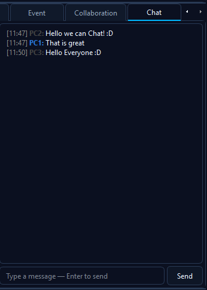
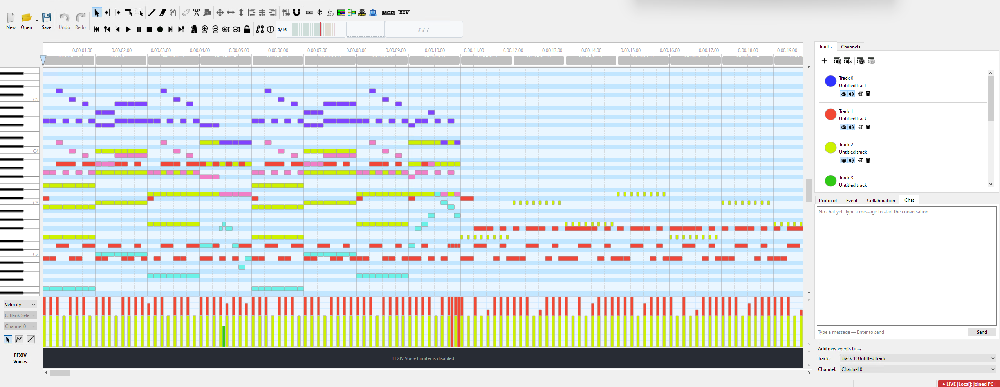
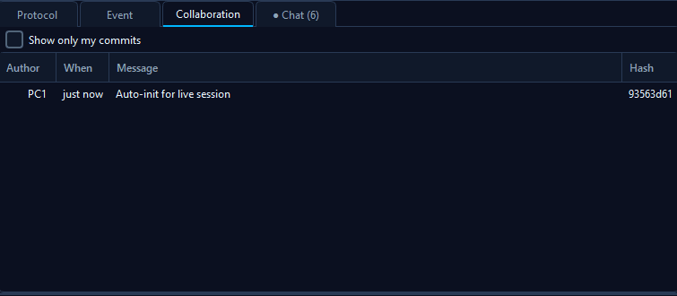

💬 In-session Chat
The Chat side-channel is a small text-chat panel that lets peers in a Live Session talk to each other without needing a separate Discord, Slack, or voice channel open. It's not a replacement for real chat tools - it's the missing "is there a way to say something to my session partner without alt-tabbing" button.
The chat travels over the same wire as MIDI hunks and heartbeats - no new connection, no extra port, no account to register. Works in both LAN and WAN sessions and in both Edit and Show modes.
Where to find it
The Chat tab appears in the lower sidebar - next to Tracks, Channels, Protocol, Event, and Collaboration. The tab is hidden when no Live Session is active and shows up automatically as soon as you start or join one.

A typical chat panel during a session. Your own messages use an accent colour, peers' messages use a neutral one, each line is timestamped in your local timezone.
Empty state

Right after joining a session: clean scrollback, input ready. Chat history is per-session only - it never persists between sessions.
Sending a message
- Click the Chat tab in the lower sidebar (or activate it - the input field auto-focuses on click).
- Type your message in the single-line input box.
- Press Enter or click Send.
Your message appears in the scrollback immediately - the local UI appends it optimistically before the wire roundtrip completes, so there's no perceptible lag even on a slow link. The host re-broadcasts to every other peer; your message doesn't echo back to you from the network.
Unread badge + tab blink
If a message arrives while you're on a different tab (e.g. you're
editing in the Channels or Protocol view), the Chat tab title flips
to Chat (N) where N is the unread count, and the tab text
blinks in an accent orange every 600 ms so it's hard to miss.

Three unread messages waiting. The tab title alternates between ● (filled) and ○ (hollow) every 600 ms - width-stable so the layout doesn't shift. Click the Chat tab to clear the badge and stop the blink; both reset on tab activation.
Limits & safety nets
The chat is deliberately minimal - the goal is "Discord circa-2015 minus the persistence". A few caps are enforced by the host so a buggy client can't flood the session:
| Limit | Value | Why |
|---|---|---|
| Max message size | 4 KB UTF-8 | Stops a copy-paste of an SDP / huge JSON blob from ending up in chat. Multi-paragraph text is fine. Oversize messages are dropped at the host with a diagnostic log entry; the sender's local optimistic append stays visible (but other peers won't see it). |
| Rate limit | 1 msg / 200 ms per sender | Per-machine-ID. A spammy client can't drown out conversation. The host's diagnostics log notes any dropped messages. |
| Scrollback | 500 messages | In-memory only. The oldest message rolls off when the cap is reached. |
| Persistence | None | Chat history is cleared on session end. Not saved to disk, not part of the MIDI sidecar, never reaches the collab log. |
How it composes with Show Mode
Chat is independent of the hat: any peer can chat at any time, including viewers in Show mode. That's intentional - the main use case for chat alongside Show is "can you slow that down?" / "play from bar 12" / "I'm stuck on the F# in bar 5" while watching a presenter work.
hunks (MIDI edits) go through the
sender == presenterMachineId validation. chat
frames are validated independently for size + rate limit only, then
re-broadcast to all peers regardless of hat state.
Privacy
- Messages travel over the same encrypted WAN transport (DTLS) as MIDI hunks. On LAN, the transport is plain TCP - the same as everything else over your LAN connection. There is currently no end-to-end encryption layered on top.
- The host (whoever started the session) sees and re-broadcasts every message - same trust model as the rest of Live Mode.
- Nothing is saved to disk. Closing the session empties the scrollback. There is no "chat log" file.
- The chat panel is hidden entirely when no session is active - you cannot accidentally type into it while editing solo.
See also
- Show Mode - presentation sessions where the chat is most useful (viewers chatting while watching a presenter work).
- LAN Live Session / WAN Live Session - the underlying transports the chat travels over.
- Discord webhook - the OTHER chat integration: async, public, post-driven (not live conversation).